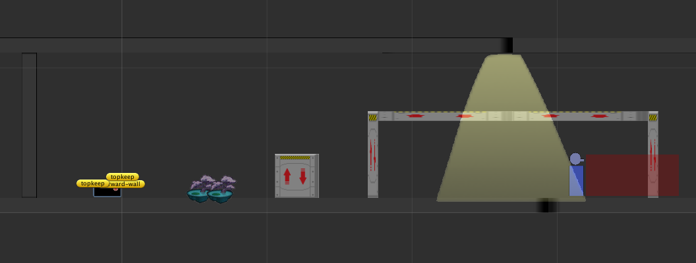
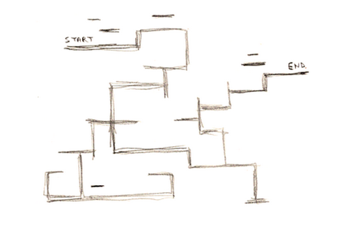
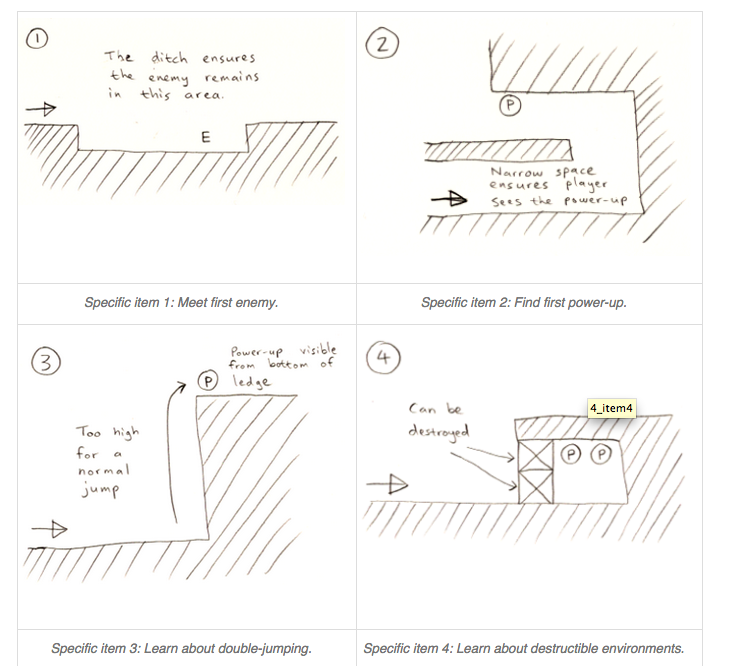
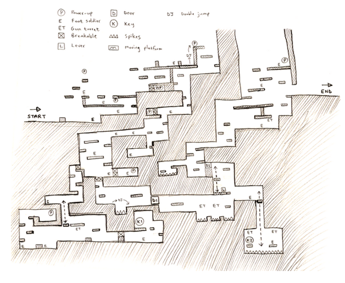
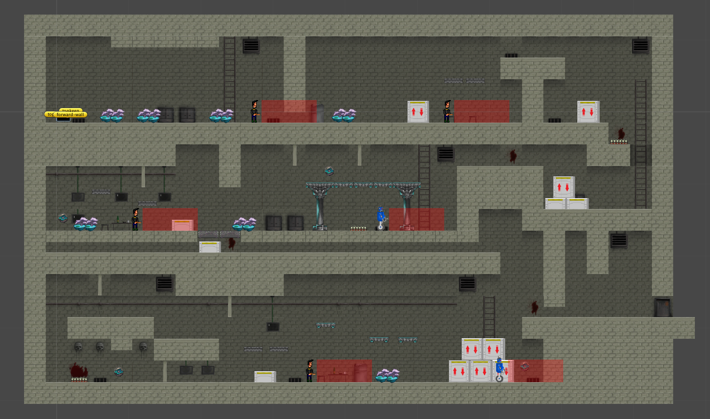

这是工作7年后的第一次独立制作。上一次的独立制作是在7年前，在学校里为找工作准备的一些项目。
这次制作的目标是indie game ，虽然最终没有完成，但是制作过程可供回顾和参考。
最初设计
制作游戏的第一步，就是要有点子。除了平时的记录和积累，用一个系统的头脑风暴流程来产生游戏点子更有效率。
我采用了一个称为game seeds 的思路。首先是以随机的方式定义一个主角的属性，比如：
物种：生物
性别：female
时空：现今
习性：流动
身材：2x1（最大3x3）
生命：2（最大6，下同）
攻击：5
速度：4
智力：6
领导力：2
通过这些随机的属性，想象主角的样子，把他画到纸上，并写下他拥有的能力和性格。我想到的是一只优雅的黑猫，跑得快，能走钢丝，会瞬移，会电击。
用同样的方式，或者直接设计，再定义一个配角。我想到的是一个互补的角色，大黄狗，速度慢，但是生命力顽强，能撞坏一些较大的障碍物。
game seeds预定义了30种游戏类型，以随机的方式，抽取主游戏类型和辅游戏类型，设计游戏特性。我抽取到的是spy和navigate。
spy是潜入游戏，我参考了很多的2D游戏的潜入设计，然后想了很多系统点子，最终精简到6条。
- 移动和光影暴露系统。移动分快速和潜行
- 进入物体内躲避
- AI视野和分级
- 跳箱子
- 走线和墙沿
- 电击
想很多点子，但是只选择5条，独立制作的工作量绝不可以大。
功能实现
做完最初设计，可以开始用代码和资源实现系统点子了。

这就是我实现各种点子的关卡，花盘可以进入躲避，箱子和横杆可以跳跃，灯光增加你的暴露值，而守卫则用来发现你。
这些道具一字排开的摆在一个平面关卡中，逐步进行实现。素材都是自己画的方块，纯色的。实现基本功能点的时候，不要找素材，不要设计关卡，用成本最低的方式开始进行编码。
关卡设计
等那几个游戏点子实现的差不多了，就可以开始设计第一关。我阅读了一些如何设计platformer关卡的文章，首先第一步是，画出关卡线路简图。有多简介呢？只用一根线表示地面和墙，随意的绘制整个关卡的区域线路，图上不考虑其他素材的放置。

紧接着设计一些关卡的局部特性。这些局部特性是独立的，可以复用的设计，不要放到关卡线路简图中考虑。比如躲避物和守卫的摆放设计，箱子和通道口的设计，陷阱摆放设计，地形局部设计等等。
局部特性是玩家在视野内面对的具体挑战，每一个设计都为玩家预留了破解方法。

做完了局部特性的设计，将他们放置在关卡线路图的特定位置上，重新绘制一份墙和地面有厚度的关卡地图。

制作关卡
根据关卡设计图制作关卡，一定要使用地图编辑工具，极大提高效率。找到合适的tileset 后，用地图工具轻松的组装和调整。
首先要做的就是刷好地面，墙和基本背景墙，然后放置关卡的局部设计。局部设计中的各种资源都使用正式的素材和动画进行替换。
对关卡中空余的空间复用这些局部设计，进行一定的调整，充实关卡又尽可能不要产生太重复的感觉。一边调整一边运行游戏，保证自己也能跑通。
最后找来3种能体现关卡风格的背景素材或者tileset，铺设到关卡中，丰富关卡环境表现，每个房间也可以增加一种不同的素材来体现区别。

总结
- 地图编辑器很重要，tilemap虽然简单，但不是很好的选择。那种自定义形状的关卡编辑器效率会更高。
- 素材是痛。设计游戏时，是否可提前指定素材包？